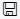

Listenansichten speichern und personalisieren
Wenn Sie einen Filter für eine Liste festgelegt haben und ihn für später behalten möchten, können Sie ihn als Ansicht speichern. Weitere Informationen zum Filtern von Listen finden Sie unter Festlegen von Filtern in Listen.
Wenn Ansichten vorhanden sind, wird die Gruppe Ansichten wie oben im Filterbereich angezeigt. Ansichten sind Variationen der Liste, die mit Filtern vorkonfiguriert wurden. Sie können pro Liste beliebig viele Ansichten definieren und speichern. Die Ansichten sind beim nächsten Öffnen der Liste auf jedem Gerät oder Browser verfügbar.
Tipp
Nutzen Sie kostenlose E-Learning-Inhalte über die Business Central-Benutzeroberfläche unter Microsoft Schulungen.
Um eine Ansicht zu speichern
- Öffnen Sie eine Listenseite.
- Wählen Sie das Symbol
 am oberen Rand der Liste oder wählen Sie Umschalt+F3, um den Filterbereich zu öffnen.
am oberen Rand der Liste oder wählen Sie Umschalt+F3, um den Filterbereich zu öffnen. - Setzen Sie einen oder mehrere neue Filter. Weitere Informationen finden Sie unter Festlegen von Filtern in Listen.
Wenn Sie die Filter festgelegt haben, wählen Sie  Symbol.
Wenn Sie einen Filter für eine Listenansicht festlegen, die bereits als Ansicht gespeichert ist, wird die vorhandene Ansicht beim Speichern aktualisiert.
- Wenn Sie eine neue Ansicht speichern, geben Sie einen Namen für die Ansicht im Kästchen Alle (Kopie) ein, z. B. Artikel, die ich besitze.
- Wählen Sie die Eingabetaste oder bewegen Sie den Cursor aus dem Textfeld, um den Namen zu übernehmen.
Wenn Sie ihm keinen Namen geben, wird er Alle (Kopie) benannt.
Tipp
Sie sehen das Symbol nicht? Weitere Informationen finden Sie unter Warum habe ich kein Symbol zum Speichern.
So benennen Sie eine Ansicht um oder entfernen sie
- Wählen Sie für die Ansicht, die gerade die Liste anzeigt, das Symbol
 Symbol, um zu sehen, welche Optionen verfügbar sind.
Symbol, um zu sehen, welche Optionen verfügbar sind. - Wählen Sie entweder die Aktion Umbenennen oder Entfernen aus.
Viele Ansichten verwalten
Wenn die Anzahl der Ansichten auf einer Seite zunimmt, müssen Sie möglicherweise zusätzlich steuern, wie Ansichten im Filterbereich angezeigt werden. Mit dem Banner Personalisierung können Sie unerwünschte Ansichten verbergen oder Ihre Ansichten neu anordnen, um die perfekte Sequenz zu erhalten. Weitere Informationen finden Sie unter Personalisieren Sie Ihren Arbeitsbereich.
Siehe auch
Häufig gestellte Fragen zu Listenansichten
Ihren Arbeitsbereich personalisieren
Arbeiten mit Business Central
Grundlegende Einstellungen ändern
Ändern, welche Funktionen angezeigt werden
Kostenlose E-Learning-Module für Business Central finden Sie hier